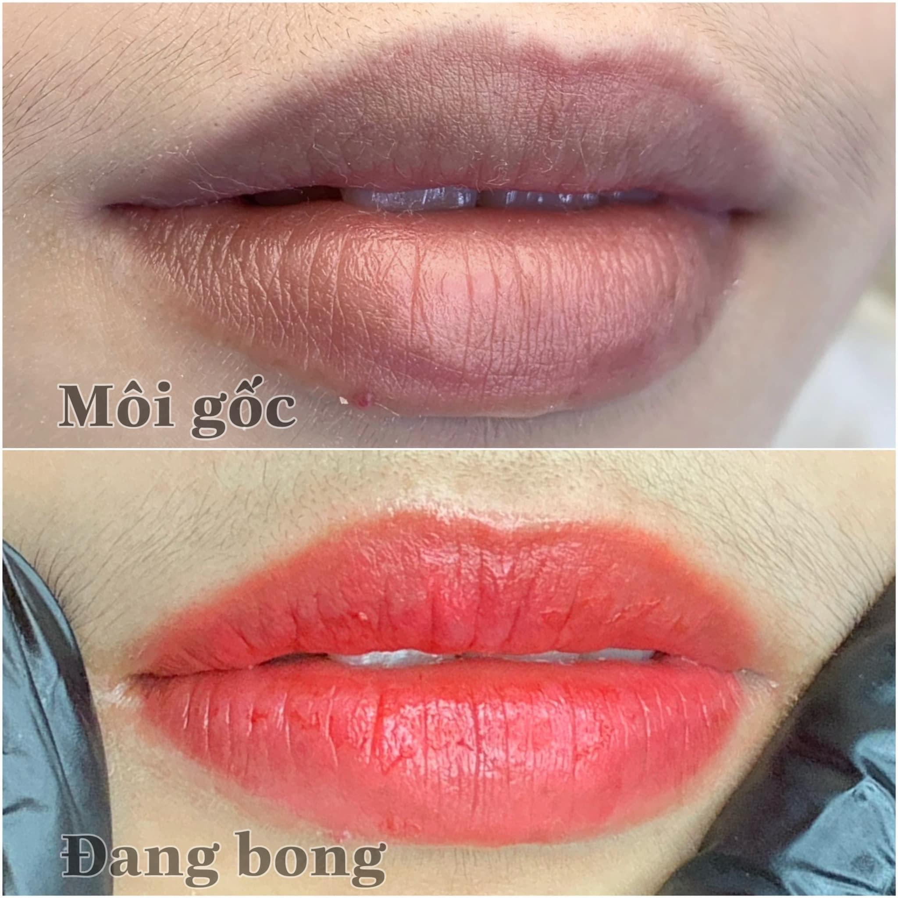
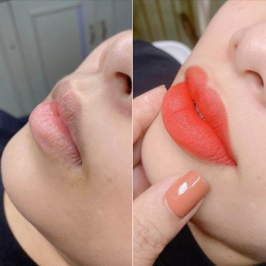

Môi Thâm Có Nên Phun Môi Không? Cách Xử Lý Hiệu Quả Cho Từng Mức Độ Thâm
Đôi môi hồng hào giúp gương mặt trở nên tươi tắn và rạng rỡ hơn. Tuy nhiên, không ít người gặp tình trạng môi bị thâm do bẩm sinh, thói quen sinh hoạt hoặc tác động từ môi trường. Điều này khiến nhiều người thiếu tự tin và phải sử dụng son mỗi ngày để che đi màu môi thật.
Một trong những giải pháp được nhiều khách hàng lựa chọn hiện nay là phun môi. Nhưng liệu môi thâm có nên phun môi không? Có cần xử lý thâm trước hay có thể phun màu trực tiếp?
Trong bài viết này, ELLY PMU sẽ giúp bạn hiểu rõ từng trường hợp và cách lựa chọn phương pháp phù hợp.
Môi Thâm Có Phun Được Không?
Câu trả lời là có. Tuy nhiên, không phải tất cả các trường hợp môi thâm đều áp dụng cùng một quy trình.
Kỹ thuật viên sẽ đánh giá mức độ thâm, nguyên nhân gây thâm, tông màu da và màu môi hiện tại. Từ đó, ELLY PMU đưa ra phương án phù hợp để màu môi sau khi ổn định trông hài hòa, không bị quá gắt hoặc xỉn.
Những Nguyên Nhân Khiến Môi Bị Thâm
Bẩm Sinh
Một số người có sắc tố môi đậm ngay từ nhỏ. Đây là đặc điểm tự nhiên của cơ thể và cần được đánh giá kỹ trước khi chọn màu.
Tác Động Của Ánh Nắng
Thường xuyên tiếp xúc với ánh nắng mà không bảo vệ môi có thể khiến sắc tố môi thay đổi theo thời gian.
Hút Thuốc Lá
Nicotine và các chất trong thuốc lá có thể khiến môi sẫm màu hơn, đặc biệt ở viền môi.
Son Kém Chất Lượng
Sử dụng mỹ phẩm không rõ nguồn gốc hoặc chứa thành phần không phù hợp có thể ảnh hưởng đến màu môi.
Cơ Địa
Một số người có xu hướng tăng sắc tố mạnh hơn người khác, nên quá trình xử lý nền môi cũng cần cá nhân hóa.


Môi Thâm Có Cần Khử Thâm Trước Khi Phun Không?
Điều này phụ thuộc vào mức độ thâm của môi.
Thâm Nhẹ
Trong nhiều trường hợp, kỹ thuật viên có thể lựa chọn màu mực phù hợp mà không cần khử thâm riêng.
Thâm Vừa Đến Nặng
Nếu môi có sắc tố thâm nhiều, kỹ thuật viên có thể tư vấn quy trình xử lý nền môi trước khi phun màu để đạt kết quả hài hòa hơn.
Phương án cụ thể sẽ được quyết định sau khi đánh giá trực tiếp hoặc xem ảnh môi mộc dưới ánh sáng tự nhiên.
Màu Môi Nào Phù Hợp Với Môi Thâm?
Việc chọn màu không nên chỉ dựa trên sở thích. Kỹ thuật viên thường cân nhắc màu da, mức độ thâm và phong cách cá nhân.
Một số gam màu thường được nhiều khách hàng lựa chọn gồm hồng đào, cam đào, đỏ cam, đỏ nâu và hồng đất. Màu phù hợp sẽ khác nhau ở từng người, vì cùng một màu mực có thể lên sắc khác nhau trên từng nền môi.
Phun Môi Cho Môi Thâm Có Đau Không?
Quy trình hiện nay thường kết hợp bước ủ tê trước khi thực hiện. Đa số khách hàng chỉ cảm thấy châm chích nhẹ, căng môi hoặc hơi khó chịu trong thời gian ngắn. Cảm nhận sẽ khác nhau tùy cơ địa.
Sau Bao Lâu Môi Lên Màu Đẹp?
Sau khi phun, môi sẽ trải qua các giai đoạn hồi phục, bong tự nhiên và ổn định màu. Thời gian ở mỗi giai đoạn có thể khác nhau giữa các khách hàng.
Điều quan trọng là chăm sóc đúng hướng dẫn và không tự bóc lớp bong để hạn chế tình trạng màu lên không đều.
Chăm Sóc Môi Thâm Sau Khi Phun
Để môi hồi phục tốt hơn, bạn nên giữ môi sạch, dưỡng môi đúng hướng dẫn, uống đủ nước, không bóc lớp bong và hạn chế hút thuốc trong thời gian đầu.
Những Hiểu Lầm Thường Gặp
Môi Thâm Không Phun Được
Không đúng. Nhiều trường hợp môi thâm vẫn có thể thực hiện sau khi được đánh giá và lựa chọn phương pháp phù hợp.
Phun Một Lần Là Hết Thâm Hoàn Toàn
Mỗi người có nền môi và cơ địa khác nhau. Kết quả sẽ phụ thuộc vào mức độ thâm ban đầu, kỹ thuật thực hiện và quá trình chăm sóc.
Chọn Màu Càng Đậm Càng Che Thâm Tốt
Không phải lúc nào cũng vậy. Việc chọn màu cần dựa trên nền môi và tư vấn của kỹ thuật viên để đạt hiệu quả tự nhiên.
Checklist Trước Khi Phun Môi
Đánh giá đúng mức độ thâm.
Chọn màu phù hợp với màu da.
Chọn cơ sở uy tín.
Chăm sóc môi theo hướng dẫn.
Câu Hỏi Thường Gặp
Môi thâm bẩm sinh có phun được không?
Có. Tuy nhiên, kỹ thuật viên cần đánh giá tình trạng thực tế để tư vấn quy trình phù hợp.
Có cần khử thâm trước khi phun không?
Không phải trường hợp nào cũng cần. Điều này phụ thuộc vào mức độ thâm của môi.
Bao lâu thì màu ổn định?
Thời gian ổn định màu khác nhau ở mỗi người và chịu ảnh hưởng bởi cơ địa cũng như cách chăm sóc.
Kết Luận
Môi thâm hoàn toàn có thể cải thiện bằng phương pháp phun môi nếu được đánh giá đúng tình trạng và lựa chọn kỹ thuật phù hợp. Thay vì tự chọn màu theo xu hướng, bạn nên để kỹ thuật viên tư vấn dựa trên nền môi thực tế để đạt kết quả hài hòa và tự nhiên hơn.